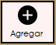
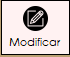
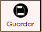
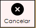
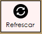

Capacitación - Cliente

El proceso del navegador tiene como objetivo realizar las diferentes acciones que un usuario puede realizar utilizando la interfaz del programa. Las acciones son: agregar, modificar, guardar, cancelar, eliminar, consultar, imprimir, refrescar y las flechas de volver al inicio, ir al final, siguiente y anterior.

Este botón tiene la capacidad de registrar nueva información en el sistema. Esto podría incluir la creación de nuevas reservas, registros de huéspedes, habitaciones o incluso cuentas de usuario para el personal del hotel.
Este botón tiene la La capacidad de cambiar, permite a los usuarios realizar cambios o correcciones en la información existente. Por ejemplo, un empleado podría usar esta función para actualizar los detalles de una reserva o cambiar el estado de una habitación.
Este botón generalmente se utiliza para confirmar cambios o ingresar nueva información en el sistema. Después de realizar modificaciones, es importante guardar los cambios para que se reflejen en la base de datos
Esta función se utiliza típicamente para anular reservas existentes o eliminar cambios realizados previamente antes de guardarlos de manera definitiva.
La opción de "eliminar" permite a los usuarios eliminar registros o información específica del sistema. Por ejemplo, un empleado del hotel podría utilizar esta función para cancelar una reserva o eliminar un perfil de huésped obsoleto.

El botón de consultar permite a los usuarios llamar al componente de consultas inteligentes, en donde se pueden crear consultas de manera rápida y sencilla. Esto para ahorrarle al usuario el tiempo que conlleva crear un Query desde cero.

Este botón tiene la capacidad de ir a la parte de reportes, en donde el usuario podrá elegir qué reporte imprimir.

La opción de "refrescar" puede utilizarse para actualizar la interfaz de usuario y obtener información actualizada desde la base de datos del hotel. Esto es especialmente útil cuando varios usuarios trabajan en el sistema al mismo tiempo para asegurarse de que estén viendo la información más reciente.
Estas flechas nos permitirán volver al inicio o si lo deseamos ir al final.

Estas flechas nos permiten volver al anterior y volver al siguiente.